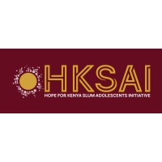

Hello am Mr. Wesonga Timothy A
Bridging information science, human rights, and technology to create meaningful impact.
About Me
Information Scientists specializing in Information Technology, with a Bachelor of Science in Information Science (Information Technology option) from Rongo University. Extensive experience in digital literacy, library information systems, and community-based ICT training. Enhancing digital divide by leveraging technology to enhance information access, cybersecurity awareness, and inclusive digital education. My professional journey began at Rongo University Library, where I supported students and faculty in accessing e-resources, research materials, and digital repositories. I then advanced to the Kenya National Library Service (KNLS) Kibera Branch as an Information Technology Intern, where I conducted digital literacy training, assisted in ICT skill development, and promoted assistive technology for individuals with disabilities. Recently, I worked at the Apollo Wakiaga Community Library, where I managed library operations, facilitated tent reading initiative programs and book Box Initiatives, and provided ICT training for students and community members in Nyamanga Migori County. Through these roles, I have developed strong expertise in library technologies, digital inclusion, and community engagement activities. I am committed to technology-driven education and lifelong learning continues which continues to drive my efforts to empower individuals and communities through digital transformation and knowledge accessibility.
.jpg)
Areas of Expertise
Information Science
Specializing in information organization, retrieval systems, and knowledge management frameworks.
Human Rights Archiving
Preserving and cataloging human rights documentation with sensitivity to ethical considerations.
Information Technology
Implementing digital solutions for information management challenges and database optimization.
Research Methodology
Conducting qualitative and quantitative research with rigorous methodological approaches.
Digital Literacy
Developing programs to enhance digital skills and information literacy across diverse populations.
International Relations
Applying diplomatic principles to information exchange and cross-cultural knowledge sharing.
Experience

Public Relations and Communication Officer
Hope For Kenya Slum Adolescents initiative.
Librerian
Apollo wakanga Foundation Community Library
Information Technology Consultant
EPZ
Information Technology Internship
Kenya National Library Service(KNLS)
.jpeg)
Information Technology Intern and Voluntary Work
Rongo University
Publications & Research
Digital Preservation Strategies for Human Rights Documentation
Journal of Human Rights Practice, Vol. 15, Issue 2
This paper examines best practices for preserving sensitive human rights documentation in digital formats while ensuring security and accessibility.
Information Literacy as a Tool for Democratic Participation
Information, Communication & Society, Vol. 25, Issue 4
An analysis of how information literacy programs can enhance civic engagement and democratic participation in emerging democracies.
The Intersection of Information Science and International Relations
International Journal of Information Management, Vol. 56
This research explores how information science principles can inform international relations practices and diplomatic information exchange.
Get in Touch
Let's Connect
"The Web as I envisaged it, we have not seen it yet. The future is still so much bigger than the past.”.